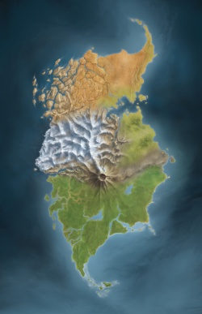
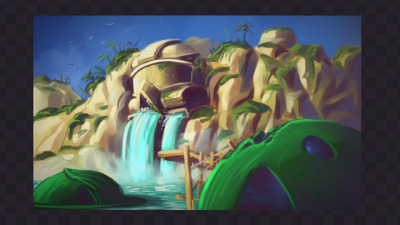
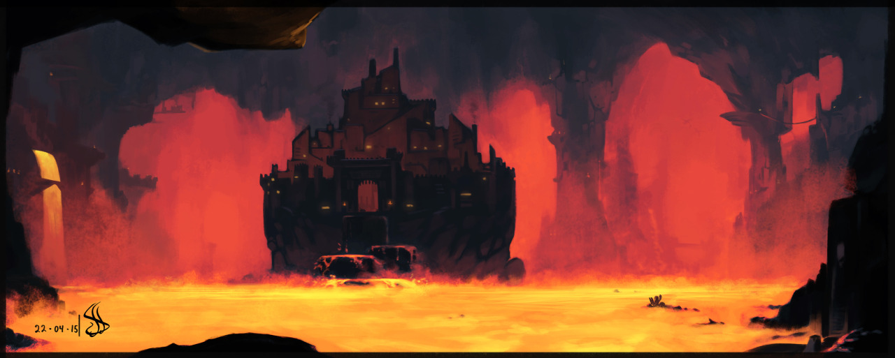
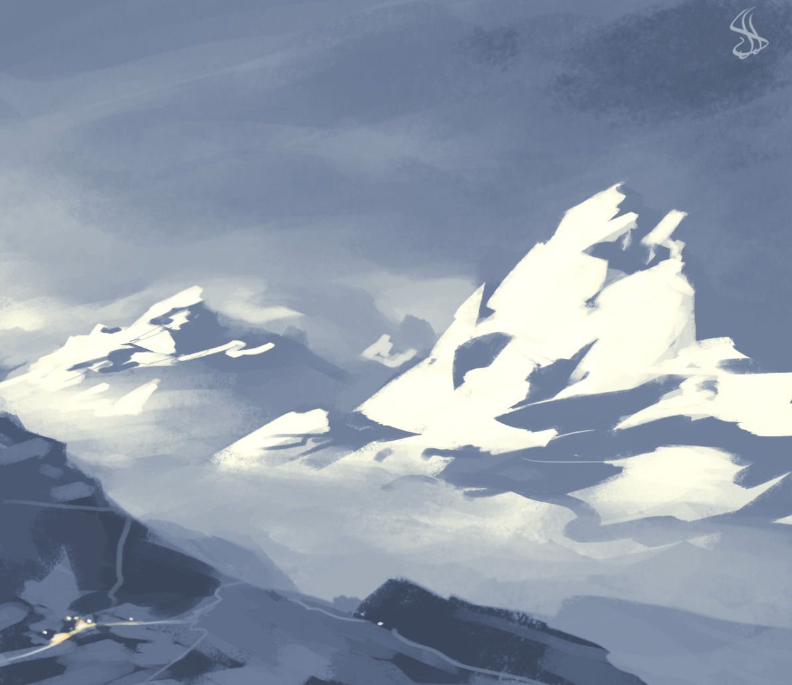
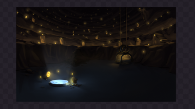
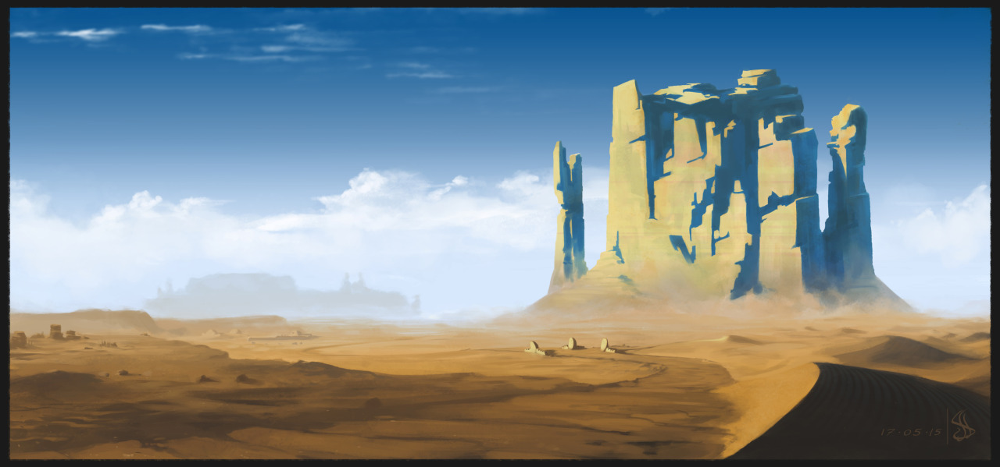
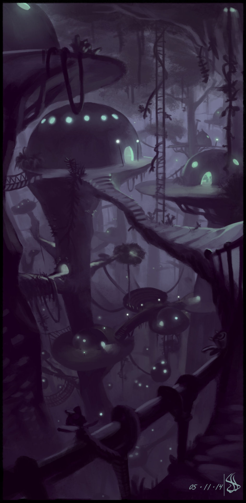

Mata Nui
 Mata Nui was once an island paradise. The island featured tall icy mountains, deep ocean bays, wide desert expanses, caves deep underground, lush green jungles, even a volcano.
For a thousand years, Matoran lived in six villages, each ruled by a wise Turaga, bothered only by the occasional rahi beast. The island was divided into six regions, or Wahi, each of which had a village, or Koro.
Ga-Wahi; from sandy beaches to white cliffs
Ga-Wahi is the water region of the island. Consequently most of the region is submerged in a body of water called Naho Bay, or Gali's Bay. The Bay is surrounded by long beaches and towering steep cliffs behind them.
The village of Ga-Matoran - Ga-Koro - can be found at the Bay, floating on the water on top of large lily pads. The huts themselves are made of thick, seaweed-like material. Ga-Koro also houses Ga-Suva, a shrine dedicated to Toa Gali, as well as Ga-Kini, a temple dedicated to said Toa.

Ta-Wahi; lava rivers and molten magma
Ta-Wahi, the region of fire, is home to the confident Ta-Matoran. The volcanic landscape is filled with lava falls and rivers of molten magma.

Ta-Koro, the village of Fire, can be found in the middle of a lake of lava called the Lake of Fire. On the outside, fortified walls and a retractable stone bridge make the village look like a fortress, with a Ta-Matoran defence force patrolling the perimeter and protecting the village against threats. Inside the walls the villagers live in huts made of cooled lava.
Ko-Wahi; icy drifts and mountains
The icy region of Ko-Wahi encompasses the largest mountain on the island of Mata Nui: Mount Ihu. The landscape is mostly covered in snow, with fierce storms afflicting the region.

The village of Ko-Koro is hidden between two massive glaciers, which are one of the prominent features in the area. There are only two entrances into the village: a single gate, which is guarded by the Sanctum Guard - a Ko-Matoran guard organization - and a tunnel that led into the Drifts from the Sanctum. The Sanctum is a building housing a massive wall of ice called the Wall of Prophecy, where prophecies were recorded.
Onu-Wahi; Caverns and Tunnels
The region of Earth differs from the other Wahis as it is mostly located underground. The area is mostly made out of various caverns and caves, Onu-Koro is also located in one of these dens. A labyrinth of Matoran-made tunnels that led to the village are the Le-Koro Highway and Onu-Koro Highway.

As most of Onu-Koro is underground, the village has several mines extending deep into the earth. Valuabled resources such as ore and Protodermis are mostly mined, as well as Lightstones, which illuminate the Onu-Matoran homes.
Po-Wahi; canyons and sandstorms
Po-Wahi is a large, rocky wasteland consisting mainly of the Motara Desert. The path to the entrance of Po-Koro is known as the Path of Prophecies, as it is surrounded by large statues of maskless Matoran heads on either side.
Po-Koro sits in the heart of the large desert, surrounded by high walls. The village is known for its traders and barters at the local marketplace. The residents themselves live in domed huts made from stone that were intended to blend in with the surroundings.

Le-Wahi; Jungles and swamps
Le-Wahi is known for its thick and overgrown jungles and swamps, which take up the ground level of the region. It is surrounded on the Southern side by Kanae Bay and on the Northern side by Fau Swamp, a marshy area unsuitable for building a village on.

Le-Koro is a unique village as it is suspended high above the ground in the treetops of the jungle. The Le-Matoran live in beehive-like huts dangling from the branches. The whole village itself is disguised to look like hanging jungle vegetation.